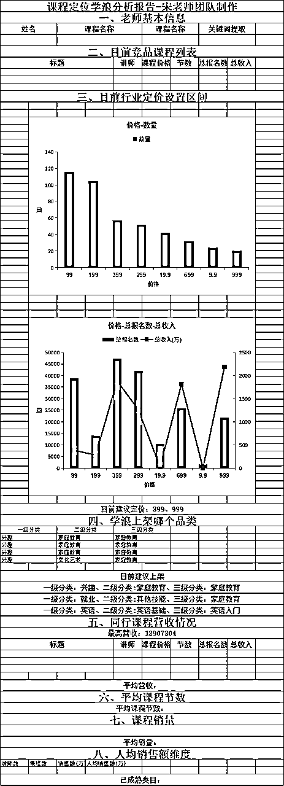
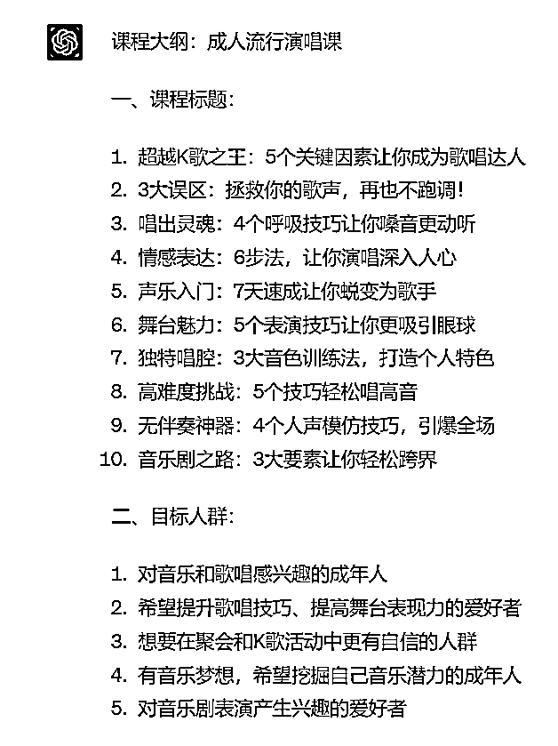

来源：https://b16xnqwk20.feishu.cn/docx/BqBudZKt2o2JIJx1s6YcBOhknge
全文6600字
推荐用时：6min
首先很感谢大家支持，有机会能在生财分享，然后之前在大航海里面分享过三次。7月底还在星球给各位圈友，分享了关于30天私域卖课60W是什么体验
时隔半个月，又输出一篇《我用chatgpt做了一套课，单月卖了1300单的黄金复盘》
下面是抖音的销量（800+）单，还有一部分（500+）是小鹅通私域成交的
我是宋老师（账号叫宋老师帮你做课）， 全网粉丝10w+，多个矩阵号。很多抖音、小红书做知识付费的小伙伴可能知道我，我花了近1年的时间，从0-1成长为做课卖课赛道的头部博主。
简短的自我介绍一下，便于大家快速知道我的价值
我的四个标签：
1.目前自媒体头部的做课&卖课博主→流量能力
2.原来的新东方总监，最高记录同步管理80w学生社群→教学能力
3.6000多位知识博主的老师→成绩
4.很多百万博主背后做课的男人
未来写书的人会越来越少，做课的人会越来越多，同样是社交名片，动态的会比静态的前景更大。
如果你是小白知识博主，要用 AI 快速完成 0- 1
如果你是中部知识博主，要用 AI 快速提效，干掉同行
如果你是头部知识博主，要用 AI 翻新产品，迭代优化
今天我分享的主题主要有以下这么几个版块：
1.【道】为什么年入百万的人一定要做课？
2.【法】如何7天用Chatgpt做一门爆款课
3.【术】我是如何通过AI与做课结合，破局进蓝海
4.【器】提高做课效率的6个超级工具
作者：宋老师私域操盘手
忠仁老师：zzr-994
知识博主无非两种人，要么是教人赚钱，面向B端；要么是教人技能，面向C端。
其实这已经把所有的人包含了
总的来说，知识博主面对的，就是有学习需求的人，只要你有痛点，有人能帮你解决，这个就是市场
那为什么普通人要做知识付费？
我认为原因有3
透露一个数据，目前知识付费卖课的平均净利润在71%。。。。。注意是净利润，而且如果你没团队，这个值会更恐怖
目前没有看到过哪个项目，比知识付费的利润大，做的好，一场咨询大几千，做的差一门课程也是99
【边际成本思维】你花10天搞出一套课，可以持续得卖，我之前得一门做课的课，一年卖了3000+单
【升单思维】一套课作为引流课，30%升单你的高价课，效益翻番
【分销思维】 知识付费界的安利模式，张琦的课、周文强的课，几百位老师做分销
假如说你只做教人做抖音，月活8亿，3亿是短视频输出者，也就是3亿的人想在抖音赚钱，他们就是你的目标人群
视频号月活6亿
小红书3亿
抖音8亿
加起来17亿！！！任何一个小的市场放在这自媒体人群都会无限大
做任何的事情，你7天不干都会惩罚你，但知识付费不会，即使你7天不拍短视频，也会有流量，可以卖课
你花一个月的时间教人做项目，没有做出来。要么就是你的方法有问题，要么就是ip的问题。最多可能面临着一条差评或者退费，对你的损失已经是最小了
现在除了做知识博主，知识付费外。没有哪个赛道能有这么大的优势了，
据统计，截至2023年6月，学浪已经有56000门在售的课程，这只是知识付费课程的一个平台。可想而知，线上课已经是大势所趋。
既然知识付费的变现能力极强，那么想做知识博主的人，就需要有产品，有自己的课程，才能有变现。
其实大部分的普通人想赚到第一桶金，并不是很费力。一套课程一劳永逸
算一个账，如果你想赚100w
499（引流课）*500单=249500
5000（利润课）*110单=550000
20000（高客单）*10单=200000
总计249500+550000+200000=999500
只要你有引流的课程，后续可以持续升单，就有无限可能
具体的私域升单打法，可以参考这篇📕30天私域卖课60W是什么体验
感兴趣的老师可以看下
我在卖课行业深耕多年，发现有几个行业看起来不起眼，但是他的品类的销量和利润特别高，
目前对知识付费而言“低粉高变现的类目”有这么几个，特别说明，这里并没有大家所常见到的“抖音运营”“电商运营”“英语”这种版块，理论上来讲，这些版块并不是在抖音很赚钱
我罗列了目前“单讲师最赚钱的几个小品类”供参考，看看哪些你能做？
乐器类的我有很多学员颠覆了我的三观，尤其是越普通的乐器往往能变现不少，而且人群大，
比如吉他、钢琴，这些品类卖的特别好而且人很少
我知道变现比较好的团队都不大，升单全都是在线上不做线下，知识付费类如果是做直播间，说实话的确是超级个体的逻辑，对人效会很高，主要依托老师本人的内容能力以及行业在抖音平台的红利杠杆。
比如说这个南宁的赵老师，她没有团队，就她和她老公两个人，干了一年总计变现了3200w，她跟我聊说，她去年不知道为什么，突然一下就卖了好几百万，就很奇怪，你说生气不生气，这就是小众品类的风口红利，所以别再盯着透透糖和李一舟了，有些老师的卖课能力其实比他们强很多
赛道的选择，永远大于努力
很多人觉得口才是个很常识的赛道了，但是我觉得这个赛道有很大的潜力，我们有个深度合作的IP案例叫云边口才，他俩找我的时候也是疫情期间，两口子隔离在家没事干，妻子是当地县城电台的主持人，当时偶尔直播做了2w多粉丝，问我怎么变现，
最早他俩想做少儿口才课，被我劝阻了，原因很简单，
所以，我更加建议他们去做了“成人口才”结果他们15天变现了16w，这个赛道红利很大，之后我们又跑出了小红书IP小哈聊沟通，也是在小红书讲口才课，变现也很好
所以，定位人群很重要
这种是有一定技术壁垒的，比如财税，造价，电建，土木这些，跟工程和企业经营相关的，容易收大单，比如这个中天电建的老师是我的学员，1w多粉丝卖课卖了100多万
还有这个造价之家也是学员，卖了61w的课
小众高收入，也是知识付费的一条变现核心之路
还有很多看起来不起眼但实际很赚钱的课程品类
比如说：
这个教戒烟的林老师，20多万粉卖了102万
这个喜悦之路老师教产后妈妈长高的课，24w粉也变现了100万
教谈恋爱的课，27w粉，变现了244万
我列了个不起眼但是很赚钱的课程选题表，大家可以看下，如果有做家庭教育的老师我们还深度研究过这个品类里面有哪些不起眼很赚钱的定位，也可以有时间再具体讨论
我总结的闪电做课法
原理很简单，六步轻松解决
定位→标题→大纲→磨课→录课→上架
有很多老师做不出课的原因在于备课慢，或者不会写大纲，或者不会做 PPT 等等问题都被这套方法解决了。这个方法就是AI+知识付费，其实就是 ChatGPT 自动帮你出课。无论是你肚子里没货，还是说你不会写大纲，或者说你压根不会写课稿，或者不会做PPT，不会做详情图，这一套方法都能帮你在 7 天的时间快速把做课的一些基础配置弄好。
因为有时候你开始的选择错了，后面的变现就会很艰难，定位选的好，变现也比较快。
实不相瞒，我的号60个粉丝的时候就已经变现了6000元了。所以加速了我后期的进度。
给一个通用的定位公式：提供xx元的xx课程或服务，解决xx人群的xx需求。
只要把每一个痛点确定好，那么你的定位一定是精准的。即便不精准，也可以通过找对标课程，进行拆解优化。
大家千万不要只做一套课，因为一套课的利润和销量太少了。我举个例子，假设你一套课400块钱，全网卖了1000份。那不过是40万，但是你有后端的高价产品，利润可能是100w
基本的产品模型是3套课程
引流款课程
利润课课程
高价款产品
用AI结合，第一步就是给他你的身份，假如你是情感专家，做一套课程，教别人向上社交。可以教恋爱技巧。他会帮你分析定位
这些都是用AI辅助做的定位，已经能给做课的老师很好的思路了，再加上对标数据，做出的课程怎么愁不好卖呢？
刚开始我们可能分析痛点比较难，其实有一个很简单的办法，就是找对标，分析我们的同行。
同行就是最好的老师
往往好的课程定位不是拍脑袋想出来的，是用数据分析出来的。
每次我都会利用独家软件对学浪内部课程数据进行数据分析，课程定位、定价、内容、售价、销量，全部一次搞定
如果你有这个行业定位的模糊，我可以帮你看一下。我有全网的数据
看定价----要看行业的平均定价，根据我们的数据，一般引流课不会超过599，不然公域很难卖
看对标----参考对标的痛点、卖点、标题、甚至是详情页的文案。他们能卖出去，证明已经在这个赛道成功了
看课数----一般是超过20节的课都不好卖，同时完课率也会低，你想想上学45分钟都很难认真听讲，几十节的课会有人听完吗
看销量----有了销量才能确定是不是蓝海赛道，而不是一个伪蓝海赛道，压根不会有人买

一个好的课程名字太重要了。✅
不光是引发好奇，还能增加销量。同时名字设置这里也有一些技巧需要大家去思考
起名字，不要自嗨，
多去思考用户想听什么，用户常搜什么，如果你无法占据销量优势，那么就一定要去占搜索词优势
比如我的《AI闪电做课法》，简单精炼，但是又有seo
好的课程标题要包含两部分
a、陈述课程知识概要
b、添加课程核心卖点
通过正确的提问方式，就是可以出现下面这些优质的标题，我相信一定比大多数人写的标题更吸引人
这已经大大提高生产力了
大健康的课程，女性成长的课程，还有唱歌的课程，用AI都可以轻松的写出来爆款的大纲

课程的大纲主要是为了保证课程内容顺序不会混乱，课程整体逻辑清晰。同时线上课程的课程大纲，不同于书本，要有一定的保证成分，也就是爆款标题的格式
好的大纲出来是成功的一半
有两点建议
1.不要太专业，晦涩难懂的大纲很难吸引人。
2.不要自嗨，要多考虑用户的需求，假如他就是想学雪梨老师哪种录课形式，我就专门有一节课，雪梨老师的录课样式教学
不得不说，AI在大纲编写方面，实力很强。只要给他提出要求，或者是仿照的模板都可以帮你拆解，几秒钟就写出大纲
下面就是随便一个口令就写出的大纲，还能继续优化，效果还是很惊人的
AI写的好，是因为提示词好
更多的提问口令，可以找我链接，安排
前面三步，可能一个小时轻松搞定了，都不需要你敲字，做选择题就好。
可以分享下课程大纲的口令，感兴趣的老师都可以亲自试试.
还有更多口令，可以私下找我
这部分试听课很关键，我还提出了一个黄金法则，首课7步法。

按照这个模式做，轻松写出百万爆款试听课，讲试听课的时候，我还会用直播加餐课，也是训练营中的一环设计
其实最开始我对于Gpt写试听课，还是很不自信的，试听课太重要了。试听课决定你的卖课率
但是当我把Chatgpt调教测试了300多次，最终得到的口令，我可以说它解决了90%老师写课难得问题。它写的试听课稿，在我的4000多位学员中是中上等的水平
我们的老师都是用的这套模板写的试听课，已经卖课几百万了
http://s.xlb-growth.com/0Sfcm

正课就更简单了，我们手敲输出2000字可能要一小时，但让ai写也就3分钟。我们再调整下内容，增加自己的干货。一篇几千字的正课稿就轻松搞定了
这个就比较简单了，找一个专业的人教，或者给你一个视频教程快速的录出来
录课的教程，录课需要的工具我都有，需要的可以安排
先完成再完美
有些老师录课几百遍，拖延1个月，就是不满意，迟迟不卖课，错过了最好的时机
所以既然有内容了，就尽快录，先变现再优化，是一点问题没有的
现在主流的课程，都是上架学浪，这是抖音的亲孩子。唯一就是审核严格一点，按照教程一般都没问题
要么就是私域用小鹅通、荔枝微课交付，都还不错
总计我们计算了，一般能跟着学，10天一定可以做出课程的
这是一些我们的学员，感兴趣的老师可以看下
http://s.xlb-growth.com/0Sfcm
当然也建议每一个做课卖课的老师，都可以做一个H5，有老师咨询的时候可以发给他，要远比文字展示的效果好
优化一个环节，做课效率提升50%，多卖课10w
下面是部分老师成功做课卖课的截图👇
卖课的老师都应该经历了一次洗礼，就是4月初的抖音不让卖课的事件。说小不小，说大不大，就是苹果和抖音出现摩擦，为了分钱，下架了所有的知识付费课程。
那几天全网的老师都在想办法，不然一天可能要损失几十万或百万。当时的市场情绪就很不稳定，我是教人做知识付费，最受影响的也是我们。
卖课的老师当时都很焦虑。同样我的课程也遇到了瓶颈，一年的时间公域和私域卖3000份的课，突然没有任何销量了，停滞不前。
这是一次卖课“危险”
既然有危险了，也是热点，利用这波势能，火了几条视频，引流2000多人。
危机出现的时候，“危”的背后一定是“机”。
不让卖课这件事一定会渡过，抖音不会放过知识付费这么大的赛道。但是对于我们来说，新产品一定是打破僵局的一把利器。
两三天出了解决方案之后，我第一手掌握到“解决方案”，利用信息差，又为课程带动了一些销量。但是远远不够的，很多人其实焦虑，情绪不稳，可能都要放弃这件事了。
当时就一个信念，要么打破僵局，进入下一个做课2.0阶段，要么解散。还好，危后有机，Chatgpt帮我7天做出一套课。
所以我开始研究Chatgpt和做课结合，让它能帮助写大纲，写课稿，还有详情页的文案，还有最让人头疼的PPT，全部都能搞定

我也在生财有个习惯，就是每天必刷风向标，今年的二三月，已经有很多朋友在Ai领域取得了成功。
当时感到前所未有的机遇到了，AI+行业还没有人做，或者是非常少的人在做
这个表格大家应该都不陌生
我与AI做课，源于一次失眠，四月的某一天可能我失眠了，失眠的原因就是都很多，有可能是工作压力
当天很多人跟我讲GPT，包括月变现千万的神话也在我耳边传开了，很早就知道 GPT 这个事了。当时，我仍然坚信与许多老师一样，认为AI无法取代我们凭借智力从事的付费知识工作。
后来现实给我很大的一巴掌，我那天一宿没睡，凌晨 2 点，爬起来，决定以一套课程为试验，看它看看能不能搞成，因为我自己制作课程很迅速。若GPT能胜过我，证明它能被大家复制。所以当天我想了一个点子，我要切一个完全对我来说未知的领域，我要看看它能不能按照未知领域给我出来一套课。
我只知道做课的方法，但我根本就不知道未知领域里面的内容是什么。然后我就找了个选题，女性情感课，教女性如何找到高富帅的白马王子。
刚刚也讲了五个环节，第一个课程定位，让他分析人群、定位、卖点，在课程大纲里面，梳理标题，起个好的名字。
当晚比较贪心，要能写稿子，这事真的是给我造福了，很多老师都快速的把稿子写出来了，那这个完课率多高。
当时用了我常用的首课7步法提了要求，没想到它真的写出来了
然后接下来录课上架，我这个东西肯定他替代不了你，所以我也没考虑
然后最后课程包装，我在想他能不能帮很多老师写那个详情页文案，因为很多老师他其实没有干过销售和营销型工作，都不知道那个文案怎么写能勾住人，所以很多老师对于写这种详情图包装课程的文案，发售信都不会写，所以我再想想他能不能写这个文案
当时很贪心，想了几个点子让他去测试PPT，就是我已当时已经听说过了，他能够帮人写短视频的选题，还能帮人写短视频的文案，还能帮人编朋友圈，我也想测试测试，这是我大概当时的一个核心逻辑。
测试了一宿，情感赛道的内容，帮我写的70%都可以了，自己改改应该没什么问题了。
那一夜，彻夜无眠，但是没有一点疲惫，我找到了破局点
第二天，到公司就和小伙伴沟通，用ai有利有弊，一方面肯定冲击自己的《做好课的课》，一方面就是涉及翻X，这也是有风险的。
争论两三小时，最终投票决定，用AI结合做课，做一次破局。
我们有优势，团队平均年龄24岁，AI对我们来说，接受程度还是相对轻松的。
决定之后就开干，打磨课程框架，优化每一步骤的提问口令prompt，增加了文案、朋友圈的加餐内容
录课，上架，轻车熟路。
真正做到了Chatgpt帮我7天做出一套课
一边写课录课，一边准备发售
当时有一个节点，就是五一假期，我们要赶在假期前打一场胜仗，一个月的精心筹备，只为这一场发售。
【AI做课】还是有它的不确定性，所以我们决定
优先从几千位老生开始，两天时间，拉了两个200人的老生发售群。当晚一场直播转化率近60%，当晚收入近10w
悬了半个月的心，当晚终于放下了，一颗大石头落地了。具体的发售细节，篇幅有限，不做过多复盘。这个以后有机会和大家再分享。只要是有产品，一定要做发售
当晚剪辑的小伙伴熬夜通宵把课程上架，完成交付。我们对上架应该是全网最清楚的，很多K12、国学的，都是可以上架的，有需要的可以私下沟通

这是今年最大的一匹黑马了，用在做课上，效率翻倍。刚刚已经介绍了一部分，不做过多赘述。
只要用对提问方法，你就能获得好的回答，总有好答案，在等待一个好提问
这个也是今年的新产品，两个做PPT的ai工具反响都很不错。有的是给标题就能出ppt，有的根据格式内容，自动生成ppt
这是我最常用也是最推荐老师使用的，每次录课写课稿，通过语音转文字，要比键盘打字快很多，而且口语化，很多老师就是课稿或者短视频都缺少口语化，显得很专业
或者是做直播的老师都有拆解同行直播间的习惯，也用这个工具，视频转文字，YYDS
同时做社群或者训练营的老师，会有群分享，也推荐使用，几分钟就 输出
这应该是录课的扛把子了，很多直播的老师都在用，现在逐渐替代OBS。一方面就是操作简单，还有美颜。另一方面，复杂的内容，录课外框，或者直播贴片都适用
远比其他录课工具，效果好

做短视频的老师应该都知道，这个工具应用到做课还有妙用。就是你手机可以直接录人像，通过剪映后期合成带有录课外框的。ppt还能设置动画，操作也很简单。字节出的这两个工具很棒
给大家分享几种高级的录课样式，还给大家准备了更多的录课外框
需要的老师可以链接，圈友免费安排
https://fkwcd.cn/v/2u83vZ3b/?slv=1&sid=lvbt&v=oosnVwjsA-np9rDGEzS7lHJD9PVI&from=singlemessage

应该很多老师用过思维导图，制作课程大纲的时候，设计课程的时候，比较好用，思路清晰
同时还有个演说功能，也是可以用在录课上，省去了做PPT的时间
好了，今天的分享就到这，无论你是企业老板还是个人博主，其实我觉得知识付费都是一门极低成本，极高收入的好事，这个行业的利润在75%以上，老板可以做课程，输出你的产品或者管理思维，用课来征服合作伙伴
个人博主可以做课程增加收入，提高粉丝粘性和后端合作
如果你是小白知识博主，要用 AI 快速完成 0- 1
如果你是中部知识博主，要用 AI 快速提效，干掉同行
如果你是头部知识博主，要用 AI 翻新产品，迭代优化
欢迎大家有知识付费问题找我讨论。
2023是AI元年，AI+知识付费是时代潮流。如果你有能力结合两者，必能占据风口浪尖。可以想象一些AI知识付费让你获利百万的场景
未来写书的人会越来越少，做课的人会越来越多，同样是社交名片，动态的会比静态的前景更大。
希望大家，2023生财有术，做课生财，感谢看到这的每一位老师
我是宋老师，23年帮助500位老师卖课50w，欢迎和我一起做课生财！